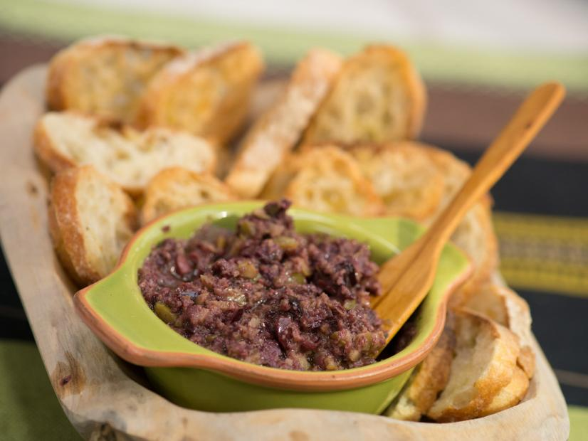

Black Goose Bistro

Tapenade (Olive Spread).
This is a really simple dish to prepare and it's always a big hit at parties. My father recommends: “Make this the night before so that the flavors have time to blend. Just bring it up to room temperature before you serve it. In the winter, try serving it warm.”
Ingredients.
- 1 8oz. jar sundried tomatoes
- 2 large garlic cloves
- 2/3 c. kalamata olives
- 1 t. capers
Instructions.
- 1. Combine tomatoes and garlic in a food processor. Blend until as smooth as possible.
- 2. Add capers and olives. Pulse the motor a few times until they are incorporated, but still retain some texture.
- 3. Serve on thin toast rounds with goat cheese and fresh basil garnish (optional).